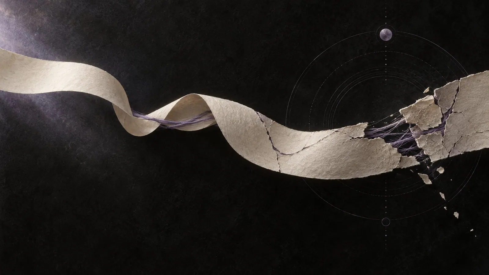
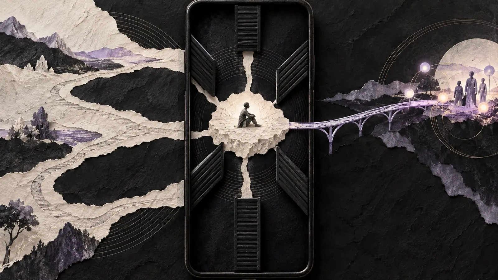

Trenches and Bridges
How manipulation works in relationships, who it hits, and how to protect yourself without starting a war.
Foreword
This text sat in the drawer for a long time. The idea was already there when I wrote "Trapped in the 6-Inch Universe" (https://x.com/valerie_4659/status/2077373809598902610), and that's a few months ago now. Now I'm back, and I want to take better care of this community again. That includes talking about the things that hurt. This topic matters a great deal to me. It's delicate, and it's dangerous, because manipulation doesn't just hurt people. It can make them lonely.
Online, I believe, it has an easier time. Isolation is simpler to pull off here. Friend groups hang on just a few connections, a single block is enough to cut someone off from everyone, and nobody is sitting at your kitchen table seeing how you're really doing.
This text is for everyone affected, for their friends, and also for those who manipulate. Because not everyone who manipulates does it out of malice. Some don't know any better. Some learned it their whole life and know no other language. Only a few, I believe, do it fully on purpose. If you recognize yourself on that side while reading, you're not lost. Recognizing it is the first step toward doing it differently.
When did it start?
A message, in the evening, very casual: "I don't want to say anything, but have you noticed how cold she's been with you lately?" You hadn't noticed. From now on, you will.
A no, said kindly. Then silence. Not the silence of a busy day, but one that lasts exactly until you apologize, even though you did nothing wrong. Then a long, warm message, as if nothing ever happened. You're so relieved that you forget what it was even about.

A post without names, the morning after an argument. Not a single word in it is addressed to you, and still half your timeline knows who it's about.
Two people who were friends for years no longer talk to each other. There was no fight. Just a feeling that the other side has changed. That something is supposed to have been said. That something is there. Neither of them can say exactly when it tipped.
Four scenes that don't need to have anything to do with each other. Maybe none of them is a problem. A tired evening, a bad day, a misunderstanding. But when someone eventually sits down and tries to trace the thread back, the same question is often waiting at the end: When did this actually start?
The honest answer is usually: earlier than you think. It just looked like care back then, or kindness, or coincidence.
Why I'm writing this
I hate manipulation. In every form. Not because I've never done anything wrong myself, I'll get to that. But because I've seen what it does when nobody names it.
I wrote "Trapped in the 6-Inch Universe" for a friend I couldn't bring back. The story is partly mine, partly his. It shows from the inside what it feels like when a person's world keeps getting smaller, until all that's left is a screen and the one voice in it. This text is the counterpart: the same patterns, seen from the outside and called by their names.
I'm describing behaviors, not diagnoses. Nobody needs to know afterwards whether a particular person is narcissistic. It's enough to recognize what's happening.
And there's a reason this matters so much to me. Manipulation almost always needs the same tool: isolation. When you're alone, it's easier for someone to tell you what the world looks like. That's why I fight loneliness, in my life and in my writing. Connection is the best antidote I know.
Manipulation is everyday life
Before we get to individual people, it's worth taking a step back. We all get manipulated, every day, and most of the time we don't notice.
The offer that's only valid today. The banner saying "Only 2 rooms left". The free sample at the supermarket that leaves you feeling slightly obliged. The feed that knows exactly which video you'll get stuck on. The mobile game that offers you exactly the bundle you were missing, right after your third narrow loss. The price ending in 99, so that 9.99 sounds like nine and not ten. The political post that makes you angry before you've finished reading it, because anger gets shared faster than thought. The psychologist Robert Cialdini described these mechanisms back in 1984. We like to give back what we've received. We want to stay consistent once we've said yes. We look at what others are doing. We follow authority, we're persuaded by people we like, and we want what's scarce. And we trust those we count as our own more readily.
None of this is evil in itself. Reciprocity holds friendships together. Looking to others helps you find your way in a new group. Influence is normal. We influence each other all the time, when we give advice, comfort, invite or disagree.
Influence becomes manipulation when three things come together. It works in secret, so the other person isn't supposed to notice what's happening. It bypasses their judgment instead of convincing it. And it serves the person using it, at the expense of the person it's aimed at.
A gift that's a gift, you can accept. A gift meant to make you feel obliged is a bill in wrapping paper. Affection that flows freely is love. Affection kept artificially scarce so that you'll work harder for it is a lever.
Advertising aims at millions and never quite hits anyone. It gets dangerous when the same mechanisms are pointed at a single person. By someone who has the time to get to know that person, and access to everything that matters to them.
Why people manipulate
The question of why hurts the most, because you so rarely get an answer. There are a few answers anyway, and usually they mix.
Control. Some people find it hard to bear when others make their own decisions. If you decide who someone talks to, what they believe and how they feel, you never have to fear surprises.
The thrill of the conquest. For some, a no isn't an end, it's a beginning. The people who aren't easily persuaded become a challenge. Then it's no longer about the person, it's about winning.
Enjoying the unrest. It sounds harsh, but some people enjoy turmoil. Where there's conflict, there's attention, and when two people fight, a third ends up at the center.
Borrowed self-worth. If you value yourself very little, you can borrow worth from others: from their admiration, their dependence, their inferiority. The problem with borrowed self-worth is that it constantly has to be paid back.
Fear. Not all manipulation comes from coldness. Some comes from panic, from the fear of being replaced, left or overlooked. That doesn't make it less harmful, but it changes how you can respond to it.
Learned. Some people grew up in families where love always came with conditions, where silence was punishment and guilt was the tool of choice. They simply don't know another language.
Research has a concept for this, the "Dark Triad": three personality traits, narcissism, Machiavellianism and psychopathy, described by Delroy Paulhus and Kevin Williams in 2002. These aren't diagnoses, but traits that show up more or less strongly across the whole population. What they share is a lack of warmth and consideration. Peter Jonason and colleagues later showed that people high in these traits use more influence tactics and switch flexibly between them, probably precisely so they won't stand out. They also tend to see love as a game.
That's interesting. But here comes the most important sentence of this section: You don't need to know the why to protect yourself. The pattern is enough.
Once you start exploring the other person's reasons, you quickly fall into the helper's trap. You understand so much that eventually you excuse everything. You end up giving therapy to the person who's hurting you instead of stepping back. Understanding is a beautiful thing. But it's not a contract that obliges you to stay.
Who it hits
Manipulation doesn't look for fools. It looks for open doors.
Nobody is immune, no matter how clever we think we are. IT security figured that out long ago. Many attacks today don't run through cracked passwords but through social engineering: the call from the supposed support desk, the email from the supposed boss, the message that hits exactly the right mix of urgency and trust. It's simply easier to talk a person into something than to break a system, once you know where the lever sits. And intelligence offers little protection. Whoever thinks they're too smart to be manipulated is the least likely to double-check.
Most often it hits people with big hearts for others. If you want to help, you respond to need, and if you respond to need, you can be reached through need. That's why so much begins with vulnerability. It's the doorbell helper hearts reliably answer. It's also why the grandparent scam works so well. It doesn't target carelessness, it targets love: when you hear on the phone that someone you love is in trouble, your first thought isn't fraud, it's how to help.
Then there are people who are shy or don't have many contacts. With only a few voices around you, there are only a few who could say: wait, that sounds odd. And when you're alone, you look for someone to belong to. Whoever offers that place quickly gets a lot of trust, sometimes more than is good. And when you've just been hurt, you're more open to anyone who makes you feel seen. In "When You Can Hear a Pin Drop" I wrote about how easily big words fit into that hunger.
One group often gets overlooked: people in transition. Freshly separated, new to a community, new to poly. If you don't know the rules of a place yet, you can't tell when someone is bending them. A "that's just how it is here" is hard to check when you've only been around for three weeks.
Then the conflict-avoidant. If you want peace at any price, sooner or later you pay it, and some people have a fine sense for who would rather swallow than push back. I wrote more about that kind of stepping back in "Those Who Always Step Back".
And finally everyone who distrusts their own perception. If you already often think "maybe I'm overreacting", you're the perfect counterpart for someone who says exactly that. Many neurodivergent people know this well, as does anyone who was told for a long time that they're too sensitive.
Is there research on how some people choose their targets? A little. Studies by Angela Book and colleagues show that people high in psychopathic traits read vulnerability more accurately, even from the way someone walks. The studies were small and about physical assaults, not relationships. But they fit something many people describe: it felt as if the other person knew right away where the gap was. And research on online romance scams tells us that people who strongly idealize partners are especially at risk.
None of this is a flaw. A big heart isn't a mistake, neither is shyness, and if you're hurt, you have a right to comfort. These are just doors that are open. You don't have to close them. You should just know they're there.
The forms
Manipulation has many faces, from quiet to threatening. The following forms rarely come alone, and none of them is proof on its own. But once you've seen them named, you recognize them more easily.
Vulnerability as an entry ticket. The beginning often looks harmless, almost touching. Right from the start, someone shows themselves as especially vulnerable, modest and grateful, so that others feel the urge to protect them. At the same time, the feelings for the person this is really about grow fast and loud. Closeness and intimacy arrive at a speed trust can't keep up with. If you don't keep pace, you become uninteresting surprisingly fast.
There's a term for this, love bombing: overwhelming attention at the beginning that creates a bond before the other person could check what they're getting into. A first small study with students in the US found links to narcissistic traits, but also to low self-esteem and insecure attachment. That fits what you see. Love bombing doesn't always come from calculation. Sometimes it comes from a hole.
And here I have to be honest. While writing, I asked myself: Did I do this too? In "Am I Selfish?" I described how I once built too fast. Big words after a few weeks, giving more and more, out of fear of being replaceable. From the outside, that can look similar.
The difference isn't in how fast the feelings are, but in what the intensity is used for. A few questions help you see it, in others and in yourself:
- Does the pace become a condition? Someone in love waits, even when it hurts. Someone love bombing loses interest or punishes when the other person is slower.
- Is the closeness used later? "After everything I've done for you" turns affection into an IOU. That's the core.
- Does it tip? Love bombing is the first phase of something. Devaluation or control comes after. If a calmer feeling follows the rush, it was a rush.
- Was it about the person, or about the feeling of being needed? The most uncomfortable question, and the most honest one.
If you flinch while reading and think "that was me too", take your time with these questions. Most of the time it was exuberance. And exuberance isn't a crime, just a reason to build more slowly next time.
Hot and cold. Needy and clingy today, cool and dismissive tomorrow, full of understanding again the day after, as if nothing had happened. If you're living through this, you're constantly busy trying to win the warmth back and wondering what you did wrong. Jealousy often comes along: as soon as a shared partner takes care of someone else, the temperature drops.
Donald Dutton and Susan Painter described back in 1981 why exactly this switching binds so strongly. The bond forms not despite the unpredictability, but because of it, especially when there's a power imbalance. In a later study with women who had left violent relationships, the switch between harshness and affection and the power imbalance predicted the lasting attachment better than how severe the violence was. It's the same principle as a slot machine: a reward that comes unpredictably holds us tighter than one we can count on.
That's why it's so hard to find your way out of these connections. And that's why it's not a sign of weakness if it takes a long time.
The other side matters just as much. Not every short reply is coldness. Some people write briefly and sometimes bluntly because that's how their mind works, because ADHD, exhaustion or a full day leave little room for padding. That's a temperament, not a tool. The difference: someone who's just brief is brief with everyone, and not as a punishment. Hot and cold means the switch that comes exactly when you behave differently from how someone wants you to.
The message in wrapping paper. Not all manipulation says what it wants. Some of it wraps it up. The post without names, written so that everyone knows who's meant. The quote that shows up in a story the day after an argument. The silence that's meant as punishment and never called that. The story that's really a letter to one specific person.
The insidious part: you can't answer it. If you feel addressed and ask, you're told nobody was meant, and suddenly you're the oversensitive one. If you don't ask, you carry the sting around with you.
After a rejection, this form often shows most clearly. Public kicks, without names, but recognizable. Demonstrative indifference toward some, while others visibly get attention. And conversations where suddenly the others are said to be stirring things up.
The triangle. The family therapist Murray Bowen described how two-person relationships under tension pull in a third to release pressure. That happens in every family and isn't automatically bad. Used deliberately, though, it becomes a tool. Rankings get drawn up: "They love me more than you." Everyone gets a slightly different version of the same story. And long before there's any conflict, someone positions themselves with everyone as reliable, understanding and harmless, so that nobody will listen anymore when someone else speaks up later.
In poly constellations the triangle is especially effective, because there are triangles there anyway. Metamours, shared partners, nested friendships. Whoever wants to sow distrust there finds plenty of threads to pull. And because everyone depends on each other a little, people rarely dare to ask out loud.
Who tells the story. The hardest form to recognize is the one that takes over the narrative itself. Other people's kind gestures get reframed as rejection. A forgotten birthday wish becomes a declaration of war, a quiet evening proof that you're being shut out.
In 1997 the psychologist Jennifer Freyd described a pattern that sits right here: DARVO. It stands for Deny, Attack, Reverse Victim and Offender. If you confront someone about hurtful behavior, you first hear that it never happened. Then comes the attack on the person who asked. And in the end, that very person is the one in the dock. Whoever sets boundaries is declared the problem.
Freyd's research group showed how effective this is. People who had experienced DARVO blamed themselves more afterwards. And in experiments, readers found the victim less credible when the accused person responded with DARVO. But there's also good news, and it's the reason this text exists: even a short explanation of DARVO beforehand weakened the effect. If you know the pattern, you fall for it less often.
Related to this is gaslighting, deliberately shaking someone's perception until they no longer trust themselves. The sociologist Paige Sweet showed that gaslighting works especially well when it can lean on existing prejudices. If you're already seen as "too emotional" or "hysterical", you're believed less. And gaslighting isolates, because at some point you no longer know who you can trust, not even yourself.
A particularly bitter variant: someone tells everyone that the others want to control the narrative and turn people against each other, while doing exactly that. Whoever shouts "isolation!" first rarely looks like the one doing the isolating.
That doesn't mean everyone who feels manipulated is being manipulated. In "Communication in Text IV" I wrote about words that sound like feelings and are really accusations, and "manipulated" is one of them. Sometimes the accusation is true. Sometimes the sentence "you're manipulating me" is itself the tool.
Control through threats. And then there's the form where the tone of this text has to change. Some manipulation doesn't stop at words. It monitors who's online when. It demands passwords, screenshots, proof. It threatens to make private pictures or conversations public. It intimidates, sometimes quietly, sometimes openly. And piece by piece, it cuts the connections to friends and family.

The sociologist Evan Stark coined the term coercive control for this. His point: many of these acts look harmless on their own. A question about where you were. A comment about a friend. The wish that you'd rather not go out tonight. The harm lies in the pattern, which slowly takes away a person's freedom to decide about their own life. And at its center, always, is isolation.
Control through exclusion. Sometimes it doesn't take a threat involving pictures or secrets. The threat of being alone is enough. "If you don't go along with this, you're out." Then you just get blocked, removed from the group chat, kicked from the server, and everyone attached to that person goes with them. I know that sentence, and I know how it feels: as if it's not one contact at stake, but everything. Online this hits especially hard, because whole friend groups often hang on a single connection. Whoever threatens exclusion there isn't threatening distance, they're threatening loneliness. And here's the difference that counts: anyone may block, that's a boundary. Threatening to block so that someone obeys is a lever.
If you recognize yourself in this section, it's no longer about relationship maintenance, it's about safety. You don't have to solve this alone, and you don't have to prove anything to deserve help. At the end of this text you'll find places that listen.
When I lay all these forms side by side, I see one shared picture. Manipulative people dig. They dig trenches between people who trust each other, shovel by shovel, half-sentence by half-sentence, until nobody can reach across anymore. And they tear down bridges that were already there: the old friendship, the direct line, the conversation without detours.
Why trenches? Because a group is a corrective. Where many people talk to each other, contradictions get noticed, and nobody can control everyone at once. It simply takes too much energy. So it's not the whole group that gets worked on, but precisely the people who are most useful: those with influence, those with lots of affection to give, those with access to others. First they're pried out of the network, then they're held. A person on an island is easier to steer than one in the middle of the net, because there's nobody left to ask: is that actually true?
Constructive people do the opposite. They build bridges. When they hear about a conflict, they ask whether the two have talked to each other yet. They mediate instead of dividing. They say "talk to her", not "I'd rather tell you myself before you hear it from her".
This picture helps me more than any list. You don't need to know every tactic to see which way a network is changing. Is it getting denser or thinner? Do the people in it talk more with each other or more about each other? Is there suddenly one person all paths run through?
One distinction matters to me here, because this is where things get confused the most: a boundary is not a trench. Someone who withdraws to protect themselves isn't destroying a bridge. Someone who says "I don't want contact with this person right now" isn't dividing anyone, they're taking care of themselves. DARVO exploits exactly this confusion. Whoever draws a boundary gets painted as the one tearing the group apart.
The difference is whether someone closes a door for themselves or builds walls for others. A boundary says: I won't go further than this. A trench says: and neither will you.
How to tell you're being used
The most uncomfortable thing about manipulation in groups is that you're rarely just the target. Often you're also the tool, without knowing it. Whoever digs trenches needs helpers to carry the dirt away. Online, the image of the flying monkeys from The Wizard of Oz has become common for this. It's not a technical term, just pop culture, but it's a fitting picture.
Almost always these are kind, loyal people. They believe they're standing by someone who's been wronged. And because they mean well, it takes them a long time to notice what they're being used for.
A few signs that this might be happening to you:
- You carry messages. "Could you tell her that ..." or "Maybe ask carefully whether ...". If you regularly find yourself mediating between people who could actually talk to each other directly, stop for a moment.
- You only know one version. Everything you know about a conflict comes from one person. You never asked the other.
- You have a firm opinion about someone you haven't exchanged a word with in weeks. And you're defending one side without ever having spoken to the other.
- You feel chosen. "I can tell you, only you understand me." Trust is beautiful. Exclusive trust paid for with distrust of others is an assignment.
And then there's the simplest test I know. After a conversation about a third person: are you closer to that person than before, or further away? If after every conversation you're a little further from someone you used to get along with, without anything having happened between the two of you, then someone is digging. And maybe you're holding the shovel.
Protecting yourself without starting a war
When you recognize manipulation, you often want to expose it right away. Tell everyone what's going on. Collect evidence, post screenshots, make the truth public. I understand that impulse. But it almost always leads into a game the other side plays better. Whoever digs is practiced at digging. Whoever shovels back ends up digging a second trench. I tried this myself. I wanted to show a friend what I saw, appeal to his conscience, prove what was going wrong. Every one of my arguments became proof for the other side: see, they want to take you away from me. I didn't pull him out. I pushed him further in.
What helps instead:
Ask directly. When you hear something about someone, ask that person yourself. Kindly, without accusation: "I was told you said this. Is that true?" A single direct sentence can bring down a whole scaffold of half-sentences.
Don't play along, not even against it. You don't have to carry messages, confirm rankings or pick a side just because someone expects you to. "You two need to sort that out between yourselves" is a complete sentence.
No counter-campaign. Where everyone is stirring things up, whoever started usually wins. Calm isn't spectacular, but in the calm, patterns become visible that get lost in the noise.
Tend your own network. Isolation is the tool, connection the protection. A large survey of women who had experienced partner violence found that social support roughly halved the risk of mental health consequences, at the same frequency of violence. Friendships that don't all run through one single person aren't a luxury. They're load-bearing.
Write it down when it gets serious. With threats, blackmail or intimidation, it helps to quietly note what happens, with dates. Not to post it, but so you can believe yourself when someone later claims it never happened.
Being allowed to leave. You don't have to prove anyone is playing games to take some distance. I've written that before, and here it counts double.
When people get lost
Sometimes you see it coming and still can't stop it. Someone you love disappears, piece by piece, into a connection that isn't good for them. Replies get shorter, meetups rarer, and at some point you hear sentences that no longer sound like that person.
You can't rescue anyone. That sounds harsh, and it is harsh. But you can hold doors open. Support services for friends and family give almost the same advice everywhere, and it matches what I've learned myself.
Keep in touch through everyday things. Not every conversation has to be about "the thing". A meme, a question about their day, a photo of dinner. The thread stays thin, but it stays.
Don't apply pressure. "Them or me" confirms exactly the narrative the other side is telling: the others want to pull you away. Whoever gets forced to choose often picks whatever currently needs defending.
Don't badmouth the other person. Even if it's true. Every criticism forces the person you want to reach into defense.
Ask instead of declaring. "How do you feel about it?" gets further than "you're being manipulated". An insight you find yourself holds. An insight served to you gets defended.
Don't shame. Shame isolates further, and isolation is the other side's tool.
Name the door once, clearly. "Whenever you want to talk, no matter when, I'm here." Once, clearly, and then not repeated all the time. Repetition sounds like pressure.
If someone comes back: no "I told you so". Spare them the reproaches. The way back is hard enough, and many walk it more than once. Staying there, even when someone goes back again, is one of the most important things you can do.
An open door isn't an open flank. You don't have to let yourself be used to keep the contact. What you share can be passed on. The door can be open without everything walking through it.
Look after yourself. Whoever holds a door open for a long time needs someone to be there for them, too.
And the last thing, the hardest: if it doesn't end well, it's not your fault. You hold the door. Only the other person can walk through it. Sometimes that doesn't happen, and that stays a pain you don't have to hold yourself responsible for.
Be the bridge
I know this text is heavy. Maybe you thought of someone while reading. Of someone who digs, or of a person you lost without quite knowing how. Maybe of yourself, too.
I don't want you to come away more suspicious. I want you to come away safer. Most people in your life don't dig. Most of them just want to be connected, exactly like you.
That's why the most effective thing you can do against manipulation is very simple. Think of someone you've recently heard more about than from. And write to them. Not about what you heard. Just: "Hey, I was thinking of you. How are you?"
That's a bridge. And no trench can do anything against bridges.
Talk. ❤️
If you recognize yourself
If you're in a relationship that frightens you, or you're worried about someone, you don't have to carry this alone.
- Germany: Hilfetelefon Gewalt gegen Frauen, 116 016. Around the clock, free and anonymous, also by chat and email, in many languages. Also advises friends and family. hilfetelefon.de
- UK: National Domestic Abuse Helpline, 0808 2000 247. Women's Aid also has advice if you're worried about someone else.
- US: National Domestic Violence Hotline, 1-800-799-7233, or text START to 88788. thehotline.org
- In immediate danger: your local emergency number.
Sources
- Robert Cialdini, Influence: The Psychology of Persuasion (1984, expanded 2021)
- Delroy Paulhus and Kevin Williams, The Dark Triad of personality00505-6), 2002
- Peter Jonason and G. D. Webster, A protean approach to social influence, 2012
- Peter Jonason and P. Kavanagh, The dark side of love, 2010
- Angela Book, K. Costello and J. A. Camilleri, Psychopathy and victim selection, 2013
- T. Buchanan and M. T. Whitty, The online dating romance scam, 2014
- C. C. Strutzenberg et al., Love-bombing, 2017
- Donald Dutton and Susan Painter, Traumatic bonding, 1981, and Emotional attachments in abusive relationships, 1993
- Murray Bowen, Triangles
- Jennifer Freyd, DARVO, 1997
- S. J. Harsey, E. L. Zurbriggen and Jennifer Freyd, Perpetrator responses to victim confrontation, 2017
- S. Harsey and Jennifer Freyd, DARVO and perceived credibility, 2020
- Paige Sweet, The Sociology of Gaslighting, 2019
- Evan Stark, Coercive Control: How Men Entrap Women in Personal Life, 2007
- A. L. Coker et al., Social support protects against the negative effects of partner violence, 2002
- Women's Aid, I'm worried about someone else
- National Domestic Violence Hotline, Ways to support a survivor
First published on X. Replies and conversation live there.